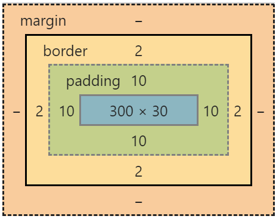
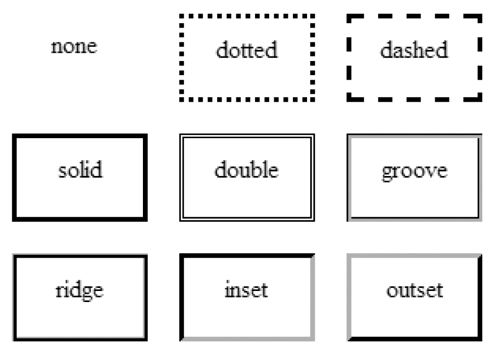

Si se necesita inspeccionar cada elemento HTML, En la herramienta de
desarrollador de cada navegador hay una pestaña llamada "Estilos" y lo que
hace es mostrar el modelo de caja.

Al posicionarse en cada elemento HTML de la página web y seleccionarlo,
estos elementos se pintarán de los colores del ejemplo y esto ayuda a
detectar cuanto de padding o margin tiene cada elemento.
Content
El contenido de la caja, donde aparecen texto, imágenes, etc.
El área del content (como su nombre lo dice) es donde se encuentra el
“contenido” central a mostrar, es decir, un texto, una imagen, un video,
etc. El contenido siempre es lo que se quiere mostrar al usuario. Esta
área en muchas ocasiones tiene un color o imagen de fondo para hacerla más
atractiva.
Como se puede observar en la imagen, el contenido es el área central de
todo el elemento, de tal forma, que el siguiente elemento que lo rodea es
el padding. El tamaño de esta área se puede modificar con las propiedades
height, width, max-height, max-width, min-height, min-width.
Cuando se establece una anchura o una altura en un elemento, esto sólo se
aplica al área de contenido (content) de la caja, no a la caja completa.
El padding y border se añaden a la anchura y la altura para obtener el
tamaño total de la caja.
Padding
Es el área alrededor del contenido. El padding es transparente. El padding
es una separación o espacio interior que existe entre el contenido y el
borde de la caja, el cual se utiliza para dar una apariencia estética más
atractiva y que el contenido no este pegado al borde.
Cabe mencionar que el padding sigue siendo parte de la caja visible, por
lo que, si se tiene una imagen o color de fondo, este se extenderá a
través del padding. El padding está delimitado por el borde.
Se puede usar el mismo valor en toda la caja, por ejemplo, padding: 20px o
se puede dar padding sólo a un lado de la caja, por ejemplo,
padding-right: 10px.
Los valores pueden ser positivos o negativos.
Además, el shorthand padding permite dar un valor diferente a cada lado,
sin necesidad de escribirlos por separado.
Border
El borde es la línea que rodea la caja, es la frontera que rodea al
elemento, esta se utiliza para darle una apariencia estética a la caja,
pues permite dibujar una línea de algún color. La línea puede tener los
siguientes estilos:

Las tres propiedades básicas para crear bordes son:
La mayoría de los desarrolladores web no utilizan estas tres propiedades
por separado. En su lugar, existe un shorthand: border. Con esta
propiedad, se puede escribir sólo border: solid 5px red.
Margin
Es la separación entre una caja y las cajas adyacentes.
El margen es la última área del Box Model y se puede ver como una
separación invisible o transparente que ayuda a separar un elemento de
otro. Cuando definimos un color o imagen de fondo, este no se propaga a
esta sección.
Los márgenes siempre quedan fuera del modelo de caja, por lo que pueden
utilizarse para crear espacio entre los elementos.
Los valores pueden ser positivos o negativos.
Outline
Outline es la línea que rodea a la caja entre el border y el margin. Se
utiliza para dibujar un contorno alrededor de un elemento. Un contorno es
una línea que se dibuja fuera de los bordes de un elemento. Se puede
utilizar con fines decorativos.
La propiedad outline no pertenece al modelo de caja sin embargo esta
propiedad es una decoración gráfica que hace que los elementos que ganan
el foco, que son por lo general los <input>, se coloren como con una
ligera aura que los rodea.
Las propiedades de outline son: